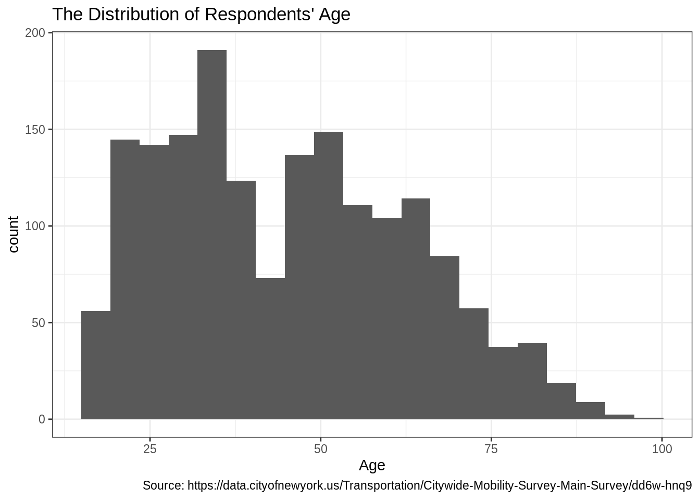
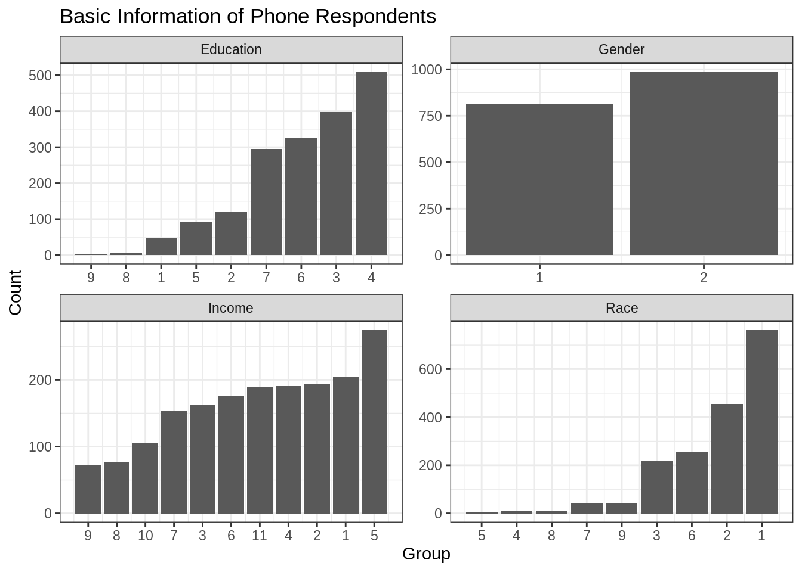
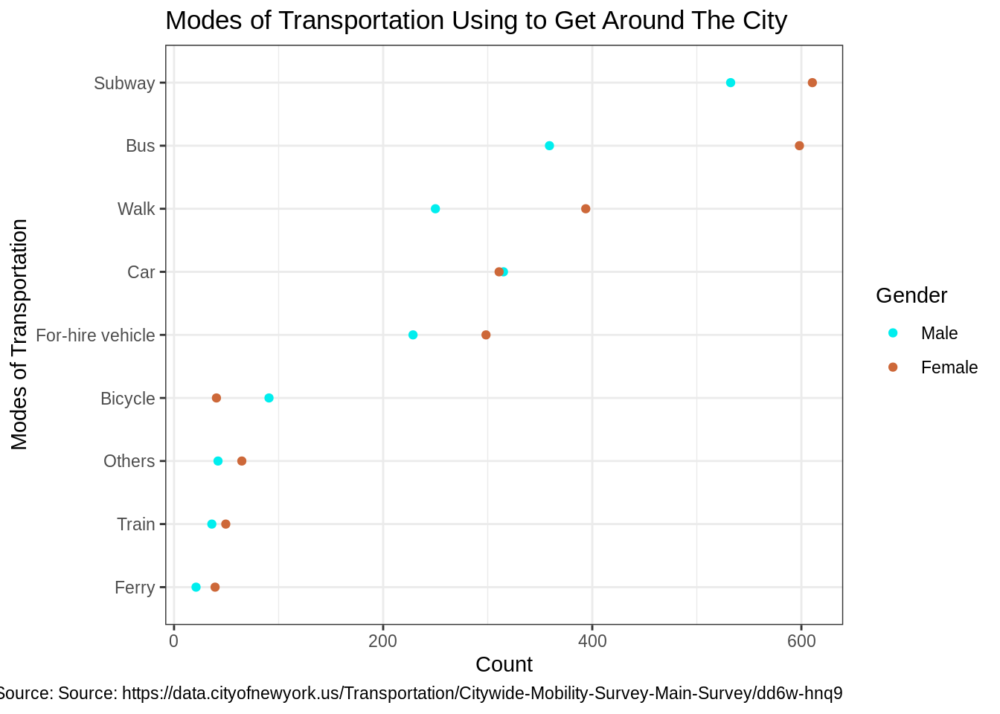
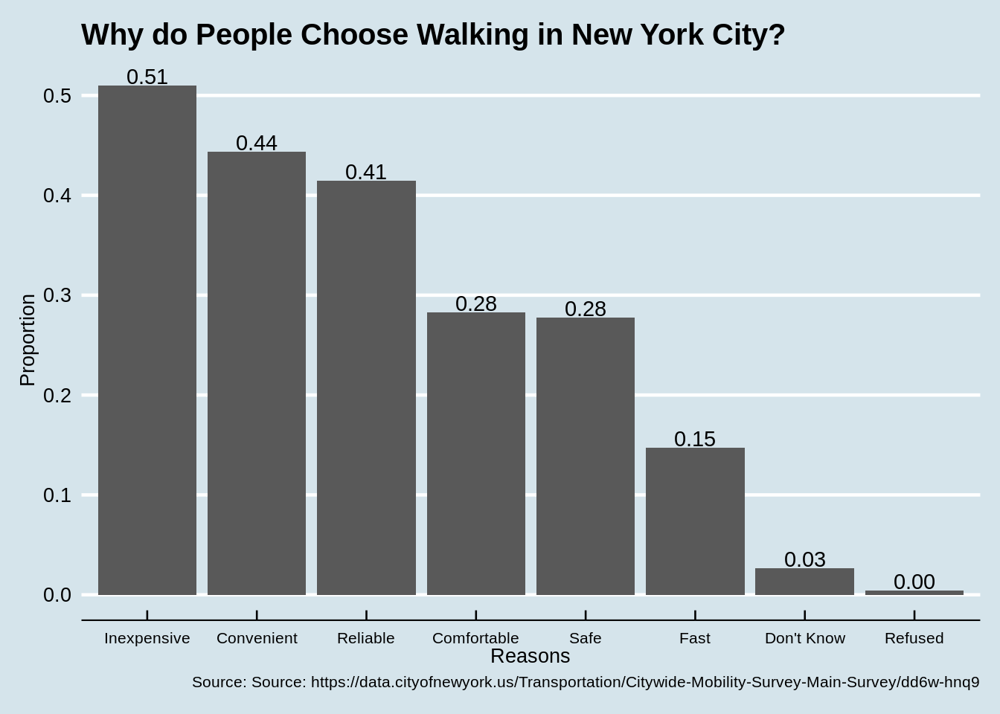
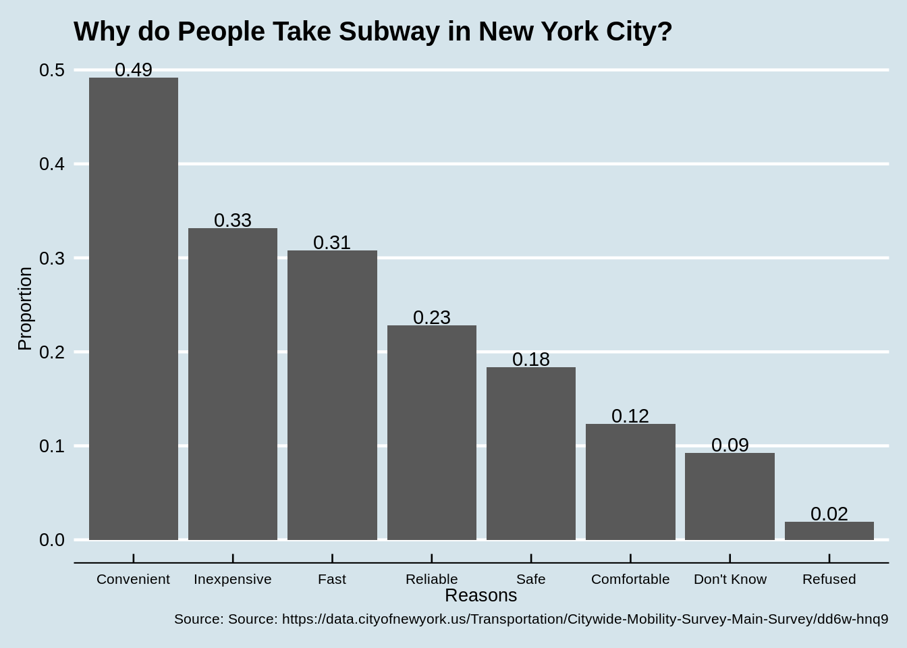
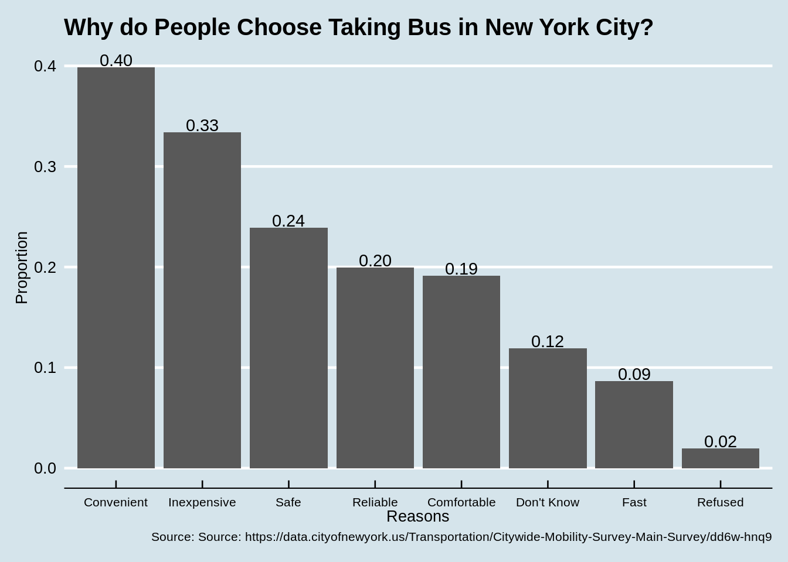

Chapter 8 Pset 5
This assignment is designed to help you get started on the final project. Be sure to review the final project instructions (https://edav.info/project.html), in particular the new section on reproducible workflow (https://edav.info/project.html#reproducible-workflow), which summarizes principles that we’ve discussed in class.
8.1 The Team
[2 points]
- Who’s on the team? (Include names and UNIs)
- Tian Wang, tw2736
- Chao Huang, ch3474
- Siyuan Wang, sw3418
- Boyu Liu, bl2791
- How do you plan to divide up the work? (Grading is on a group basis. The point of asking is to encourage you to think about this.)
As we have several questions we are curious about, each of the team member will be responsible for exploring one question.
8.2 The Questions
[6 points]
List three questions that you hope you will be able to answer from your research.
What are the factors and experiences that drive transportation choices for New York City residents?
What’s the transportation preference and usage pattern at the overal city level?
What’s relationship between transportation preference and air quality?
8.3 Which output format do you plan to use to submit the project?
[2 points]
bookdown.
8.3.1 The Data
What is your data source? What is your method for importing data? Please be specific. Provide relevant information such as any obstacles you’re encountering and what you plan to do to overcome them.
[5 points]
We plan to analyze “Citywide Mobility Survey - Main Survey” dataset, the source of which is NYC Department of Transportation. Full dataset and description can be downloaded here.
We download the dataset from the website and use read.csv() to import data.
Obstacles: How to deal with sampling weights? This dataset has a column of sampling weight, which can be used to correct for imperfections (e.g. the selection of units with unequal probabilities, non-coverage of the population) in the sample that might lead to bias and other departures between the sample and the population. At the beginning, we’re confused about how to take these weights into account when analyzing categorical variable. But after careful consideration, we plan to multiply each observation with the corresponding sampling weight and then do the subsequent exploratory data visualization.
8.3.2 Provide a short summary, including 2-3 graphs, of your initial investigations.
[10 points]
This survey conducted among New York City Residents in two ways, over phone and online. Both of them have sample size 1800. The survey conducted over phone reached more general New York population and the survey conducted online targeted the population in certain neighborhoods that are difficult to reach by phone, not representative of New York City at the overall city level. So we will use different sub datasets to analyze what we are concerned about on the overall city level and the survey zone level.
Another important thing we have mentioned in the Obstacles part is that we need to take survey weights into consideration when we analyze the dataset. The weights are given by US Department of Transportation, which were calculated based on age, gender, ethnicity, educational attainment and geography.
In this stage,
- We explored some basic information of the phone survey respondents, including age, gender, race, education and income. In these features, age is continuous data and the others are categorical data, so we visualized them using histogram and bar chart, respectively.
Remarks:
For Gender, 1 = Male, 2 = Female.
For Race, 1 = White/Caucasian, 2 = Black/ African American/ Caribbean American, 3 = Asian, 4 = American Indian or Alaska Native, 5 = Native Hawaiian or Pacific Islander, 6 = Other, 7 = Two or more races, 8 = Don’t know, 9 = Refused.
For Education, 1 = No high school, 2 = Some high school, 3 = High school graduate or equivalent (i.e., GED), 4 = Some college but degree not received or in progress, 5 = Associate degree (i.e., AA, AS), 6 = Bachelor’s degree (i.e., BA, BS, AB), 7 = Graduate degree (i.e., Master’s, Professional, Doctorate), 8 = Don’t know, 9 = Refused.
For Income, 1 = Less than $14,999, 2 = $15,000 - $24,999, 3 = $25,000 - $34,999, 4 = $35,000 - $49,999, 5 = $50,000 - $74,999, 6 = $75,000 - $99,999, 7 = $100,000 - $149,999, 8 = $150,000 - $199,999, 9 = $200,000 and above, 10 = Don’t know, 11 = Refused.
Results Summary:
Age: Age is bimodel distributed and its two modes are around 30 and 50. Its range is [18, 99].
Gender: Female and male respondents are about 56.20% and 43.80% of the total.
Race: The majority of phone respondents are White or Caucasian, followed by Black/ African American/ Caribbean American. American Indian or Alaska Native and Native Hawaiian or Pacific Islander are the least.
Income: Most respondents have total annual household income $50,000 - $74,999 and least respondents have total annual household income $200,000 and above. We can imagine the distribution of annual income, which would be right-skewed.
Education: The majority of respondents have at least high school education.

- We explored the relationship between gender and choices for modes of transportation. Here we cannot use mosaic plot, since the question for modes of transportation allows multiple choices. So we can only focus on the number of respondents choosing each answers.
From the following Cleverland dot plot, we can see that both females and males prefer going out by subway. Less of them will use train and ferry to get around the city. The overall preferences of females and males for modes of transportation are roughly the same, except that most of females also prefer taking bus and walking.

We further analyzed the reasons for choosing walking, subway and bus to get around the city. Not surprisingly, the common causes for these choices are that they are inexpensive and convenient. Generally, walking and taking bus would take a long time to get to a place and subway is a little uncomfortable. However, the majority of responsdents, especially females, still prefer taking subway, bus and walking to get around the city, indicating that they are more concerned about the price and level of convenience.
  
Next step, we will mainly focus on multivariable analysis, trying to figure out the factors and experiences that drive transportation choices for New York City residents. Also, we will analyze the transportation preference of New York City residents and the usage pattern at the overall city level.